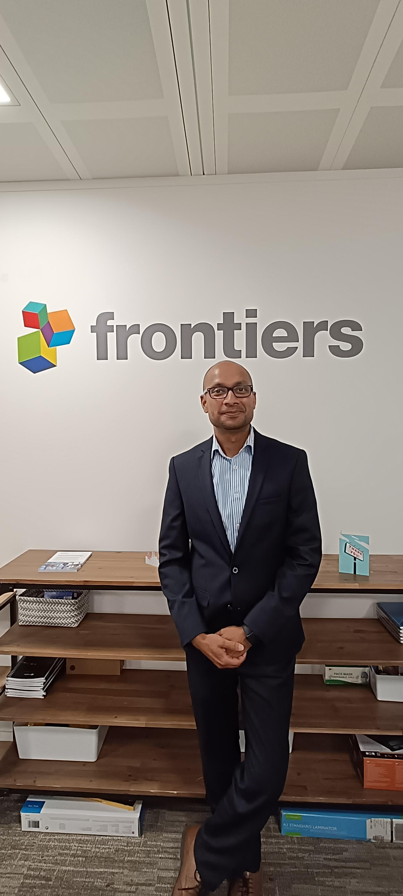

Information Technologies
Everything you need to survive your first day — and every day after that.
Let's BeginWho We Are
The IT team is here to support you with day-to-day technical issues across all Frontiers offices and to implement IT projects and technological improvements that support the business and the way it operates.
We aim to make your daily work easier by taking care of your technology challenges.
The People Behind the Tickets
Senior Desktop Support Technician
China
Desktop Support Technician
LondonDesktop Support Technician
ChinaDesktop Support Technician
LausanneDesktop Support Technician
LausanneDesktop Support Technician
MadridDesktop Support Technician
MadridOur Core Disciplines
These are our core disciplines — 'our business as usual' if you like.
Laptop builds and hardware setup
User profiles, access permissions, AV equipment
Users, cloud services, onsite meetings & events
How to, where to, what's next
Technologies, experience, service
Creating, communicating, integrating, documenting
Implementing, creating, advising
Onsite support, onsite training, advise
Today's Programme
Step 1
Firstname.LastName@frontiersin.net
Temp*12345
Step 2
Multi-Factor Authentication adds an extra layer of security to your account. You'll need to set up the Microsoft Authenticator app on your phone.
Security
To change your password, press Ctrl + Alt + Delete and select Change Password.
This is the only approved method for changing your password.
Your password should include:
Using a strong password helps protect your account and company systems.
Know the Difference
When to use .net vs .org
Security
All Frontiers computers and laptops are encrypted using BitLocker.
BitLocker Drive Encryption is a security feature built into the operating system that helps protect data from unauthorized access.
It protects company information in case a computer is lost, stolen, or improperly decommissioned.
Security
We use Cloudflare to protect and improve the performance of our websites and online services.
Cloudflare provides security and reliability by protecting our systems against cyber threats, filtering malicious traffic, and ensuring fast and stable access to our services.
This helps keep our platforms secure, available, and performing well for users worldwide.
Important Tip
All the Microsoft applications use your .net email address for authentication.
FirstName.LastName@frontiersin.net
Communication
We use Microsoft Teams as our primary communication and collaboration platform.
Microsoft Teams allows employees to chat, hold meetings, make calls, and collaborate on documents in one central place. It helps teams stay connected whether working in the office or remotely.
Teams also integrates with other Microsoft 365 tools, making it easy to share files, manage projects, and collaborate efficiently across the organization.
Use Microsoft Teams for internal communication, meetings, and file sharing instead of email whenever possible. You can chat with colleagues, create team channels for projects, and schedule meetings directly through Teams.
Email & Calendar
We use Microsoft Outlook for email (your .org email) communication and calendar management.
Outlook allows you to send and receive emails, schedule meetings, manage your calendar, and organize contacts in one place.
Use the calendar feature in Outlook to schedule meetings and check colleagues' availability before sending meeting invitations. This helps avoid scheduling conflicts and keeps everyone organized.
File Sharing & Data Backup
We use OneDrive to automatically save a copy of your files in the cloud.
This means that if your computer is lost, stolen, or stops working, your files are still safe and can easily be restored on a new device.
Be sure to keep your laptop connected to the network and switched on to ensure a complete backup. Also, double-check the files are syncing from time to time.
Password Management
We use 1Password to securely store your passwords, so you don't have to remember them all and each password stays strong and unique.
Project Tracking & Documentation
We use Jira to keep track of work across teams. It helps us organize tasks, follow progress, and make sure nothing gets lost or forgotten.
We use Confluence as a shared space to store and share information. It helps teams collaborate, capture project details, and assign tasks clearly.
CRM — For Some Users Only
We use Salesforce to manage customer and business information in one place — our CRM solution.
Firstname.lastname@frontiersin.net
Open Science Research Network
We use Loop as the platform to create your personal profile, giving you access to all our editorial resources and tools.
Once registered, you can collaborate on workflows, manage content, and navigate the back office of our main platform, frontiersin.org.
loop.frontiersin.orgFollow the steps here: How do I register on Loop?
Make sure your profile is complete before requesting DEO access.
When Things Go Wrong
How to Submit an IT Request
Submit your request via the Frontiers IT App on MS Teams
Use the IT Service Desk or Help Center portal
Email it.services@frontiersin.org — this automatically creates a ticket in our system.
Logging a ticket is essential to ensure your request is properly tracked, assigned to a Technician, and resolved efficiently.
Pop Quiz
What domain do you use to log into your laptop and internal Microsoft apps?
Which key combination do you press to change your password?
What is the name of our VPN solution?
Which three folders does OneDrive automatically sync?
What is the primary method for submitting an IT request?
Useful Information
A range of useful information for your time here at Frontiers are on Confluence.
We're Listening
If you're experiencing the stunned silence of complete, perfect comprehension, we won't keep you any longer — you have a marathon of other training sessions to survive today.
Welcome to Frontiers.